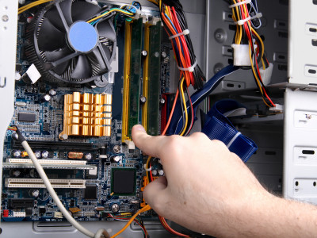

Operador de PC Duración: 5 meses
El instituto OHM brinda un curso diagramado por profesionales especialmente para personas con escasos o nulos conocimientos de informática.
Las prácticas se orientan a trabajos reales, como redacción de cartas comerciales, creación y administración de planillas de cálculo, etc.
El curso está dividido en 2 unidades independientes:
Unidad 1: Operador de PC Básico.
Duración: 5 meses
Unidad 2: Operador de PC avanzado.
Duración: 5 meses
Algunos temas son: Entorno Windows, Microsoft Word, Excel, Power Point, Panel de Control, etc…
 Redes Informática
Redes Informática Duración: 5 meses
Redes Básicas: tarjeta de red modelos OSI y TCP.
Redes y Subredes: Mascara y calculo de subredes.
Configuración TCP/IP: Estática y Dinámica. Cableado estructurado. Redes WAN, MAN y LAN. Red de oficina. Red hogareña. Protocolos de red. Lógicas de las redes. Compuerta and. Decimales, binarios, hexadecimales. Elementos intermedios de red. Router. Modem.
Reparación de PCDuración: 10 meses.
Este curso está orientado a la preparación de técnicos especializados en la reparación de computadoras desde el punto de vista del hardware y del software.
Teoría del Hardware
Estructura de una computadora. Fundamentos de los circuitos digitales. Compuertas lógicas. Elementos que forman un Mother Board. Tipos y evolución de los microprocesadores. Micros de Intel y AMD. Las memorias Ram. Tipos de memorias Ram. La Bios. Tipos de Bios. Lo Chipsets. Modelos de chipsets. Arquitectura de los buses. El FSB. Calculo de transferencia de datos. La placa de sonido. El sonido On Board. Buses de expansión (ISA, VESA, PCI, PCI express). Puertos de comunicación (COM, Paralelo, USB). Es disco rígido HDD. Controladora para el HDD. Lectoras y grabadoras de CD. El Floppy Disk. Fuentes de alimentación. Módems. Placas de RED. Monitores de PC. Introducción a Redes. Comunicaciones entre PCs. Redes bajo Windows 98 y XP.
Software
El sistema operativo y el firmware. El DOS. Comandos de DOS. Inicialización y Partición del HDD. Formateo. Instalación de Windows. Drivers para dispositivos. Software para el testeo del Hardware Linux y su instalación. Recuperación de HDD. Software de recuperación. Resolución de conflictos en hardware. Internet. Instalación. El programa Main terminal. Instalación de red bajo Windows.
Laboratorio
El Tester y su manejo. Armado de PCs. Instalación de sistemas operativos. Particiones de HDD y recuperación. Reparación de computadores. Practicas de Redes.
Requisitos: Primaria completa.